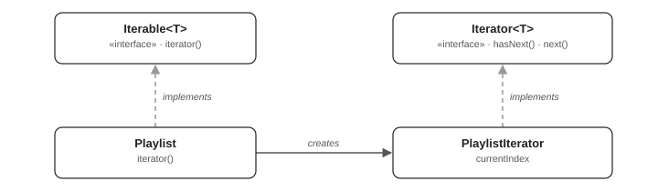
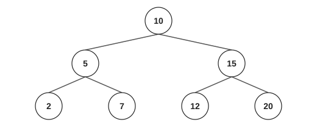
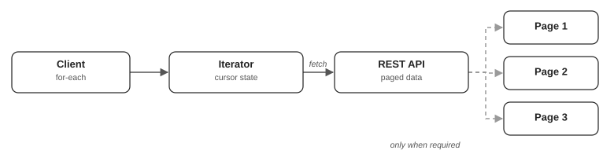

| Data structure | Typical traversal approach |
|---|---|
| Array | Index-based traversal |
| Linked List | Follow node references |
| Binary Tree | In-order, pre-order, post-order |
| Graph | BFS or DFS |
| Database query | Cursor-based traversal |
| Paginated API | Fetch successive pages |
Iterator pattern is a behavioral design pattern that provides a way to access and traverse the elements of a collection
or aggregate object sequentially without exposing its underlying data structure or internal representation.
Intent is to provide a standard way to traverse through a collection of objects without exposing its internal structure.
Iterator pattern separates the responsibility of traversing elements from the collection that stores them.
Instead of requiring clients to understand how elements are organized internally, the collection provides an iterator object that encapsulates the traversal logic and maintains the current position.
The Iterator pattern allows different traversal algorithms to be implemented for the same collection, supports multiple independent traversals, and lets the internal representation of a collection change without affecting client code.
In simple terms: The Iterator pattern tells us how to visit elements without needing to know how they are stored.
Consider a music playlist containing several songs. A music player needs to play songs one by one, but it should not need to know whether the playlist internally uses an array, linked list, database, or another structure.
Playlist provides an iterator that knows which song comes next. The music player simply asks whether another song exists and then requests it.
This separates the storage responsibility from the traversal responsibility.
Suppose we have a collection of songs stored in an ArrayList.
List<String> songs = new ArrayList<>();
songs.add("Song A");
songs.add("Song B");
songs.add("Song C");
for (int i = 0; i < songs.size(); i++)
System.out.println(songs.get(i));
This works, but the client explicitly depends on an index-based traversal approach.
Now suppose the playlist changes internally to a linked list, tree, or another custom structure.
Different structures can require different traversal algorithms:
| Data structure | Typical traversal approach |
|---|---|
| Array | Index-based traversal |
| Linked List | Follow node references |
| Binary Tree | In-order, pre-order, post-order |
| Graph | BFS or DFS |
| Database query | Cursor-based traversal |
| Paginated API | Fetch successive pages |
Without an abstraction, clients may need to implement or understand traversal details for each structure.
The Iterator pattern solves this by introducing a common interface:
Iterator<T> iterator = collection.iterator();
while (iterator.hasNext()) {
T element = iterator.next();
# Process element
}The client now depends on the Iterator abstraction rather than the internal storage or traversal implementation.

Conceptual structure: the collection creates a concrete iterator implementing a common traversal interface.
The pattern has four main participants:
| Participant | Responsibility |
|---|---|
| Iterator | Defines operations to traverse elements. |
| Concrete Iterator | Implements traversal and maintains its current position. |
| Aggregate / Iterable | Defines a method to obtain an iterator. |
| Concrete Aggregate | Stores elements and provides an appropriate iterator. |
The client typically interacts only with Iterable and Iterator, without directly accessing the collection's internal representation.
Java already provides these abstractions through java.util.
Iterator interface
public interface Iterator<E> {
boolean hasNext();
E next();
default void remove() {
throw new UnsupportedOperationException();
}
default void forEachRemaining(Consumer<? super E> action) {
# Default implementation
}
}| Method | Purpose |
|---|---|
hasNext() | Returns true if another element exists. |
next() | Returns the next element and advances the cursor. |
remove() | Removes the last returned element, if supported. |
forEachRemaining() | Processes all remaining elements using a Consumer. |
next() should throw NoSuchElementException if no elements remain.
Iterable interface - represents something whose elements can be traversed.
public interface Iterable<T> {
Iterator<T> iterator();
}The key relationship is:
Iterable represents the object that can be traversed.Iterator represents an individual traversal with its own state.A class implementing Iterable can be used with Java's enhanced for loop.
for (String song: playlist)
System.out.println(song);
Conceptually, Java translates the enhanced for loop into something similar to:
Iterator<String> iterator = playlist.iterator();
while (iterator.hasNext()) {
String song = iterator.next();
System.out.println(song);
}This is why custom classes implementing Iterable can work directly with for-each.
Every invocation creates a new iterator object with its own traversal state.
Iterator<Song> it1 = playlist.iterator();
Iterator<Song> it2 = playlist.iterator();
System.out.println(it1.next().title()); # Song A
System.out.println(it1.next().title()); # Song B
System.out.println(it2.next().title()); # Song AEven though both iterators traverse the same playlist, each maintains its own currentIndex.
The important design principle is that the client does not need to access songs.get(index) or manage the index itself.
One limitation of this simple implementation: Structural changes to the playlist during traversal are not detected. Java's standard collections generally have more carefully defined iterator behavior, which we'll discuss later.
This example demonstrates the real power of the Iterator pattern.
Unlike an ArrayList, a binary tree does not store elements in a simple sequential order. Its nodes are connected through left and right references.
A tree can be traversed using several algorithms, including in-order, pre-order, post-order, and level-order.
Iterator pattern allows us to encapsulate these traversal algorithms so that the client does not need to implement them.
Binary tree structure

Binary search tree used for the traversal examples.
For this tree, different iterators can return different sequences.
Explore traversal orders
| Order | Visit sequence |
|---|---|
| In-order | 2, 5, 7, 10, 12, 15, 20 |
| Pre-order | 10, 5, 2, 7, 15, 12, 20 |
| Post-order | 2, 7, 5, 12, 20, 15, 10 |
We will implement an Iterable binary tree with two different iterator implementations.
public class Node<T> {
public T value;
public Node<T> left;
public Node<T> right;
public Node(T value) {
this.value = value;
}
}
public class BinaryTree<T> implements Iterable<T> {
private Node<T> root;
public BinaryTree(Node<T> root) {
this.root = root;
}
@Override
public Iterator<T> iterator() {
return new InOrderIterator<>(root);
}
public Iterator<T> preOrderIterator() {
return new PreOrderIterator<>(root);
}
}
public class InOrderIterator<T> implements Iterator<T> {
private Deque<Node<T>> stack = new ArrayDeque<>();
public InOrderIterator(Node<T> root) {
pushLeft(root);
}
public void pushLeft(Node<T> node) {
while (node != null) {
stack.push(node);
node = node.left;
}
}
@Override
public boolean hasNext() {
return !stack.isEmpty();
}
@Override
public T next() {
if (!hasNext()) throw new NoSuchElementException();
Node<T> node = stack.pop();
pushLeft(node.right);
return node.value;
}
}public class PreOrderIterator<T> implements Iterator<T> {
private Deque<Node<T>> stack = new ArrayDeque<>();
public PreOrderIterator(Node<T> root) {
if (root != null) {
stack.push(root);
}
}
@Override
public boolean hasNext() {
return !stack.isEmpty();
}
@Override
public T next() {
if (!hasNext()) throw new NoSuchElementException();
Node<T> node = stack.pop();
if (node.right != null) stack.push(node.right);
if (node.left != null) stack.push(node.left);
return node.value;
}
}
void main(String[] args) {
var root = new Node<Integer>(10);
root.left = new Node<Integer>(5);
root.right = new Node<Integer>(15);
root.left.left = new Node<Integer>(2);
root.left.right = new Node<Integer>(7);
root.right.left = new Node<Integer>(12);
root.right.right = new Node<Integer>(20);
var tree = new BinaryTree<Integer>(root);
System.out.println("In-order:");
for (Integer val: tree)
System.out.print(val + " ");
System.out.println("\nPre-order:");
Iterator<Integer> iterator = tree.preOrderIterator();
while (iterator.hasNext())
System.out.print(iterator.next() + " ");
}Output:
In-order:
2 5 7 10 12 15 20
Pre-order:
10 5 2 7 15 12 20How the in-order iterator works
Our impl uses a stack instead of recursion, allowing the traversal to be paused and resumed between calls to next.
The important observation is that the client only calls hasNext and next. It does not need to know anything about
tree nodes, stacks, recursion, or traversal order.
Time and space complexity
| Operation | Complexity |
|---|---|
| Construct in-order iterator | O(h) |
hasNext() | O(1) |
next() | O(1) amortized |
| Traverse entire tree | O(n) |
| Additional iterator space | O(h) |
Here, n is the number of nodes, and h is the tree height.
These iterators assume the tree is not structurally modified during traversal.
This example illustrates an important benefit: The same object structure can support multiple traversal strategies without changing how clients consume its elements.
A particularly useful application of the Iterator pattern is retrieving large datasets from a paginated REST API, database, or remote service.
Suppose an API contains one million users but returns only 100 users per request.
Without the Iterator pattern, the client might have to manage page numbers, cursors, and network requests.
With an iterator, the client can simply write:
for (User user : paginatedUsers) {
process(user);
}The iterator can fetch subsequent pages automatically, only when needed.
How lazy pagination works

We will simulate a paginated API using a functional interface.
# Represents one API response
public record Page<T>(List<T> items, String nextCursor) {}
# API abstraction
public interface PageFetcher<T> {
Page<T> fetch(String cursor);
}
# Aggregate
public class PaginatedItems<T> implements Iterable<T> {
private PageFetcher<T> fetcher;
PaginatedItems(PageFetcher<T> fetcher) {
this.fetcher = fetcher;
}
@Override
public Iterator<T> iterator() {
return new Iterator<>() {
private Iterator<T> current = Collections.emptyIterator();
private String nextCursor = null;
private boolean hasMorePages = true;
@Override
public boolean hasNext() {
while (!current.hasNext() && hasMorePages) { # Fetch another page only when needed
Page<T> page = fetcher.fetch(nextCursor);
current = page.items().iterator();
nextCursor = page.nextCursor();
hasMorePages = nextCursor != null;
}
return current.hasNext();
}
@Override
public T next() {
if (!hasNext()) throw new NoSuchElementException();
return current.next();
}
};
}
}
void main(String[] args) {
PageFetcher<String> api = cursor -> { # Simulated REST API
int page = cursor == null ? 0 : Integer.parseInt(cursor);
System.out.println("Fetching page " + (page + 1));
return switch (page) {
case 0 -> new Page<>(List.of("Alice", "Bob"), "1");
case 1 -> new Page<>(List.of("Charlie", "David"), null);
default -> new Page<>(List.of(), null);
};
};
PaginatedItems<String> users = new PaginatedItems<>(api);
for (String user: users) # Client does not manage pagination
System.out.println("User: " + user);
}Output:
Fetching page 1
User: Alice
User: Bob
Fetching page 2
User: Charlie
User: DavidNotice that page 2 is not fetched until the iterator runs out of elements from page 1.
If the client stops after Alice, page 2 is never fetched.
Why this is useful
The client does not need to know how pagination works or when API calls must be made.
It simply processes individual elements.
The iterator encapsulates the pagination cursor, current page and fetching logic.
This is valuable for REST API pagination, large database result sets, cloud storage object listings and other sources that produce data incrementally.
For production use, a paginated iterator also needs appropriate error handling, retry policies, resource cleanup when applicable, and protection against an API returning a non-progressing cursor. In this implementation, calling hasNext can perform network IO.
Although these two interfaces are closely related, they have different responsibilities.
| Iterator | Iterable |
|---|---|
| Represents a traversal | Represents a traversable object |
| Maintains traversal state | Creates or provides iterators |
Defines hasNext() and next() | Defines iterator() |
| Typically gets exhausted after traversal | Can generally create a fresh iterator |
| Used to move through elements | Enables enhanced for loops |
Java provides several traversal mechanisms.
| Mechanism | Characteristics | Typical use |
|---|---|---|
Iterator | Forward-only, stateful traversal | Sequential access |
ListIterator | Forward and backward traversal, optional modifications | Lists |
Iterable | Supplies iterators | Enhanced for |
Spliterator | Supports splitting traversal work | Streams, parallel processing |
Stream | Declarative data-processing pipeline | Filtering, mapping, aggregation |
For example, with Iterator:
Iterator<String> iterator = names.iterator();
while (iterator.hasNext()) {
System.out.println(iterator.next());
}With a stream:
names.stream().filter(name -> name.startsWith("A")).forEach(System.out::println);The difference is mostly in how the client controls processing.
Streams generally build on Spliterator, not directly on the traditional Iterator interface.
Advantages
iterator returns a fresh iterator with its own position.next needs them.for loop — any Iterable plugs straight into for-each.Disadvantages
ArrayList already provide iterators.Iterator cannot move backward or reset; that needs ListIterator or a new iterator.The Iterator pattern follows the Single Responsibility Principle by separating the responsibility of storing elements from the responsibility of traversing them.
It also supports the Open/Closed Principle because new traversal implementations can often be introduced without modifying existing client logic.
These benefits depend on how the aggregate is designed; implementing Iterator alone does not guarantee perfect encapsulation or adherence to every design principle.
Use it when clients should traverse a structure without depending on its implementation, when multiple traversal algorithms are needed, or when results must be retrieved incrementally.
It is particularly appropriate for custom trees, graphs, hierarchical structures, paginated APIs, database cursors, and
file-system traversals.
For ordinary Java collections, you generally do not need to implement your own iterator. Java already provides suitable implementations for ArrayList, LinkedList, HashSet, TreeSet, and other standard collections.
These patterns can work together but solve different problems.
| Pattern | Main responsibility |
|---|---|
| Iterator | Controls how elements in an object structure are traversed |
| Composite | Organizes individual objects and groups into tree-like structures |
| Visitor | Defines operations performed on elements, separate from their classes |
For instance, consider a compiler's Abstract Syntax Tree (AST).
A Composite-like structure can represent expressions and statements as tree nodes. An Iterator can traverse those nodes in a particular order. A Visitor can perform semantic analysis or generate code when visiting each node.
The patterns are complementary rather than mutually exclusive.
The Iterator design pattern separates how objects are stored from how they are traversed.
Scanner — walks through tokens or lines of input one at a time without exposing the underlying buffer.
The collection provides an iterator, while the iterator maintains traversal state and determines which element comes next. Clients interact through a common interface rather than manipulating indexes, node references, stacks or pagination cursors themselves.
The key Java interfaces are:
Iterable<T> # Provides an iterator
Iterator<T> # Performs traversalAnd their most important methods are:
Iterator<T> iterator();
boolean hasNext();
T next();The most important takeaway: The Iterator pattern becomes especially valuable when traversal is more complex than looping over an array—for example, traversing a binary tree in different orders or lazily loading records from a remote API—because it hides that complexity behind a simple, consistent interface.